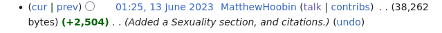
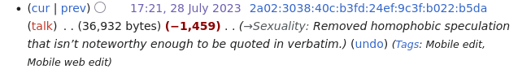
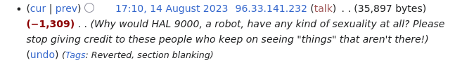
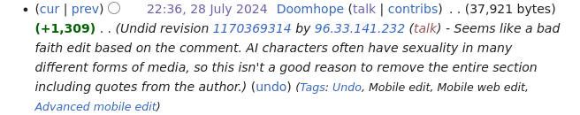
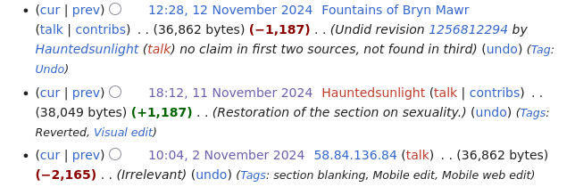

A Peculiar Feud Regarding HAL 9000's Sexuality on Wikipedia
Wikipedia is a very amazing place. The fact that we have an online encyclopedia encompassing such a vast array of knowledge is wonderful, isn't it?
As of writing -- the 17th of November, 2025 -- I've made a whopping four edits, all of which were correcting syntax and adding links to very, very niche articles. I was going to go to a Wikimedia event on the 2nd, however, schedule conflicts arose. One day, I'll properly contribute to the site. Just not today. It's oddly intimidating to me...
Of course, the broader scope of Wikipedia is not the focus of this article.
I, along with loads of other people, have had an inkling in regards to HAL 9000's sexuality. To my knowledge, this dates back to some initial reactions to the original Kubrick film. HAL sounded quite queer to some audience members, which is not terribly surprising, since one of Douglas Rain's instructions when it came to HAL's voice was to sound a bit more "dandy."
I, for one, think he was not queer enough. I think the film would've benefited greatly from a twenty minute scene of HAL making Dave wack off. Unfortunately, my creative geniusness was not consulted during its production.
Ahem.
I wanted to share with the world a humorous series of events that I discovered in the edit history of HAL 9000's Wikipedia article.
First, we start with the initial creation of the Sexuality subsection.
The text reads as follows:
Cultural critic Mark Dery, in his 2012 book I Must Not Think Bad Thoughts: Drive-by Essays on American Dread, American Dreams, argues that "HAL's sibilant tone and use of feline phrases like 'quite honestly, I wouldn't worry myself about that' contains more than a hint of the stereotypic bitchy homosexual."[36] Dery makes reference to Alan Turing, a gay computer science known as the father of artificial intelligence and creator of the Turing test; he writes that "HAL was presumably raised by men and, like Turing, schooled in an all-male environment. That all-male environments are hotbeds of sublimated sexuality, haunted by the threat of same-sex love, is news to no one; English boarding schools such as Turing's, where 'contact between the boys was fraught with sexual potential' (Hodges), have long been the, er, butt of locker-room one-liners."[37]
In 1997, when asked about HAL's sexual orientation by cultural critic Paula Treichler at the University of Illinois' Cyberfest, Clarke said, "I don't know; I never asked him. His voice has a certain ambiguity, however."[37] When Dery posed the question to Clarke that same year by email, Clarke replied, "I can't confirm or deny your speculations. Who knows what goes on down in the subconscious?"[37]
In the 1987 edition of his book The Celluloid Closet, gay film historian Vito Russo includes 2001: A Space Odyssey in a list of films containing gay characters or references, citing the scene in which HAL wishes Frank a happy birthday.[38]
Here is a link to the initial edit.
Another edit follows a little over a month later:
The first paragraph is removed. Woe!
Do I see how saying "stereotypic bitchy homosexual" could be considered uncouth? Yes. Do I think Dery's argument is homophobic? No. The book the quote is cited from, from what I can gather, tackles themes of masculinity and queerness in pop culture, among other things. Is it not noteworthy? No. I do not get why this was neutered, and it looks like I'm not alone in this assessment.
Then, about three weeks later, a bombshell!
The entire section has been removed!
Dear editor, I am delighted to inform you that HAL is, in fact, fictional, and is from a series that involves one of the main characters turning into an incorporeal plasma baby. Thus, HAL is not limited to the confines of reality. HAL can think carnally about the two infuriatingly attractive men onboard Discovery as much as he desires, thank you very much.
A little while later:
The neutered sexuality section is back! Unfortunately, not for long:
People really don't like gay computers. Quite unfortunate.
As of now, the Wikipedia article on HAL 9000 is currently devoid of a Sexuality section. I would restore it if I was not irrationally afraid of editing Wikipedia articles.
... I hope you benefit greatly from this information.